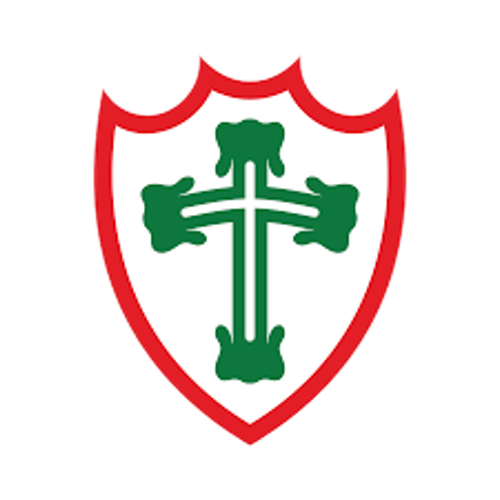

Hino do Portuguesa
Letra
Vamos à luta, ó campeões
Hão de vibrar os nossos corações
Na tua glória, toda certeza
Que tu és grande, ó Portuguesa!
Vamos à luta, ó Campeões
Há de brilhar a cruz dos teus brasões
E tua bandeira verde-encarnada
Que é a luz da tua jornada!
Vitória é a certeza
Da tua força e tradição
Em campo, a Portuguesa
Pra nós, és sempre um time campeão!
Associação Portuguesa de Desportos é um clube poliesportivo brasileiro com sede em São Paulo que tem como modalidade esportiva principal o futebol.
Foi fundada em 14 de agosto de 1920 por membros da comunidade portuguesa radicados na capital paulista e suas cores são o vermelho e o verde,
em alusão à bandeira nacional de Portugal.
Quinto maior clube paulista ativo em títulos estaduais, participações na elite e número de pontos conquistados no Campeonato Paulista,
passa por um momento de crise e declínio no futebol profissional, desde o título do Campeonato Brasileiro Série B de 2011 e permanência na elite em 2013, até 2018,
quando não se classificou para nenhuma divisão do Campeonato Brasileiro pela primeira vez desde o início da era moderna da competição, em 1971.
O vice-campeonato brasileiro de 1996, o Campeonato Brasileiro da Série B de 2011, os títulos do Torneio Rio-São Paulo em 1952 e 1955 (a época o único campeonato interestadual do Brasil e precursor do Campeonato Brasileiro),
e os 3 títulos do Campeonato Paulista (o último em 1973), ficaram marcados como os seus mais célebres momentos.
Voltar